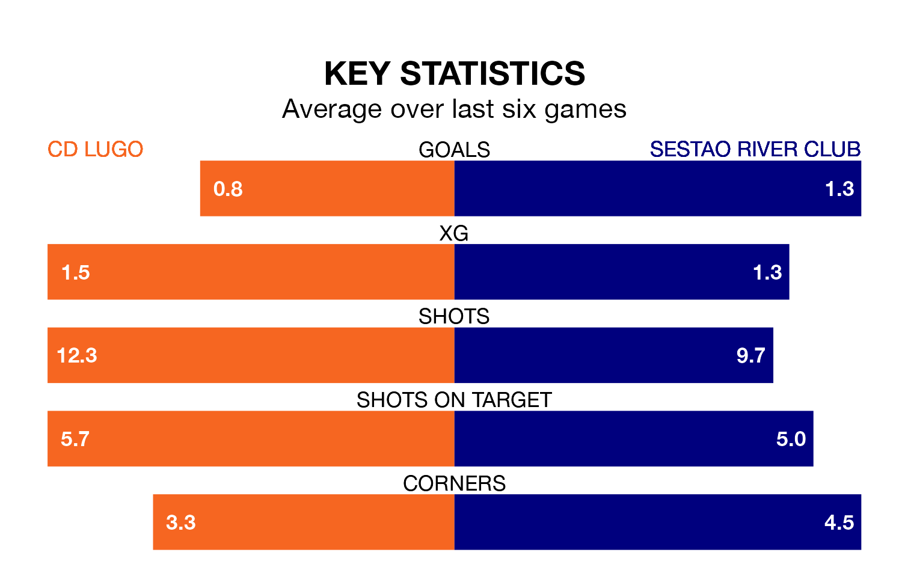

CD Lugo host Sestao River Club on Sunday at the Estadio Anxo Carro in Primera Division RFEF Group 1.
In their last league match, on March 17, Lugo drew with SD Ponferradina 0-0 away.
Sestao River Club won, 2-0 at home against SD Logroñés on March 16, with Jon Cabo Madariaga and Álex Aizpuru Aizbitarte on the scoresheet.
Sestao River Club are 16th in the table after 28 games, of which they have won six and drawn 10, earning 28 points.
Lugo are six places ahead of the visitors in 10th, with nine wins and 10 draws putting them on 37 points.
With 21 goals in 28 games so far this season, the home team are scoring at below the league average rate with 0.8 goals per game. And they are conceding at an average rate, letting in 27 goals at a rate of 1.0 per game.
Sestao River Club are also below average scorers, with 0.8 goals per game, compared to a league average of 1.0. They have conceded 1.3 goals per game.
Lugo are in mixed form in Primera Division RFEF Group 1, with one win and four draws from their last six games.
With two wins and a draw over that period, Sestao River Club's form is similar – they have both taken seven points from 18.
In Luis Alfonso Ledesma Galán, Lugo have one of the league's most on-form strikers so far this season. He has notched six goals in 21 appearances, to sit ninth in the scoring charts.
His goal rate of one every 278 minutes is quicker than that of Aitor Aranzabe Etxabe, the away side's top scorer with a goal every 373 minutes, and a total of five goals in 24 games.
Updated: 10:19 (UTC), 22/03/24